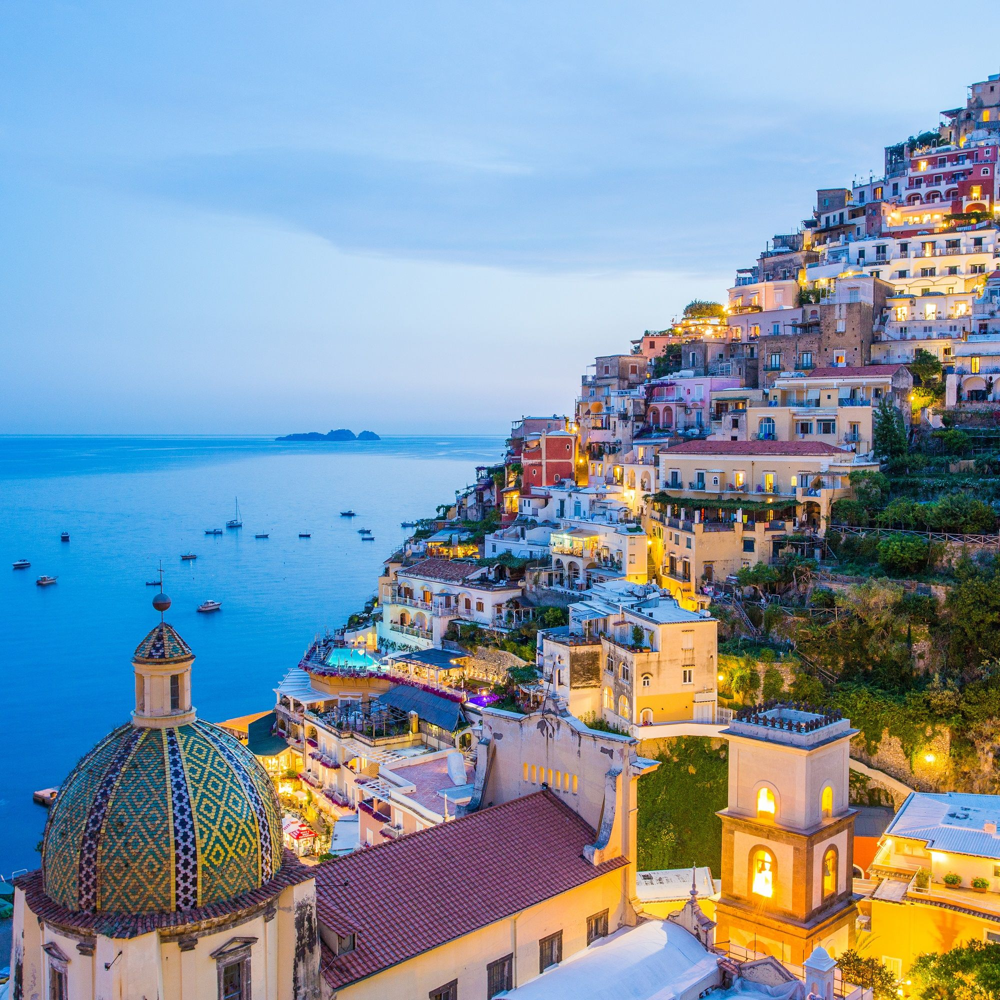
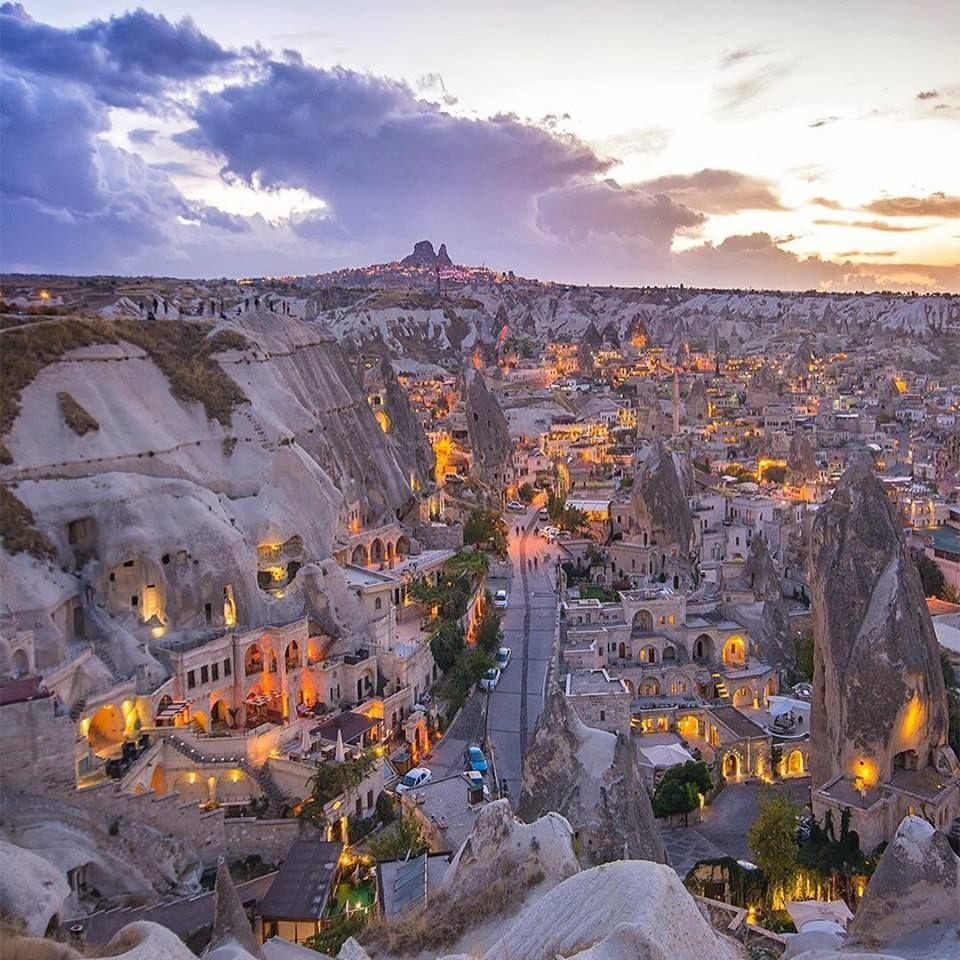
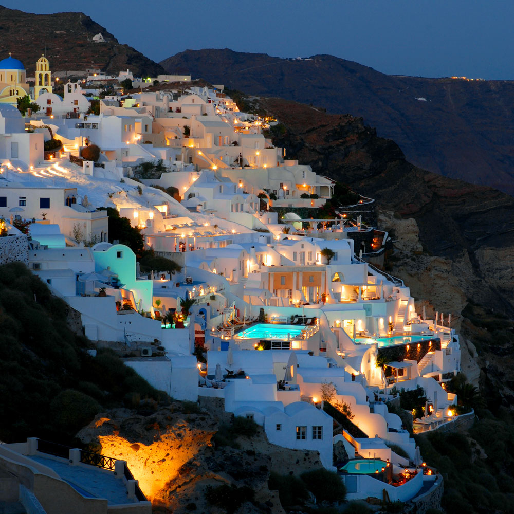
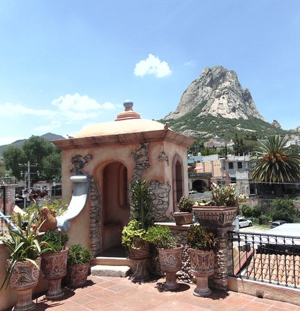

|
Inicio | América | Asia | Europa | Africa |
|---|
POSITANO, ITALIAPositano es un pequeño pueblo italiano que cuelga de acantilados para no caer al mar. Puedes conocer El Sendero de los Dioses que te lleva por 8 kilómetros de escaleras y bellos paisajes. Positano ofrece algunos lugares que lo convierten en el mejor de los destinos para los turistas que pasan por este sector de Italia. Es el caso de su hermosa bahía, ideal para sacar buenas fotografías. También está la zona de Fornillo, ubicada en lo alto de los acantilados y desde donde se puede observar al archipiélago Li Galli. |
 |
GÖREME, TURQUÍAConoce el hermoso pueblo de Göreme, puedes disfrutar de la belleza de su arquitectura antigua al igual de sus hermosas vistas al Parque nacional de Göreme, conocido también como Museo al aire libre de Göreme. Este parque nacional es quizás el territorio más famoso de todos los paisajes de Capadocia. El parque fue listado por la Unesco como Patrimonio de la Humanidad en el año 1985. |
 |
OÍA, GRECIAQuizás es el lugar más deseado de la isla de Santorini y también el más fotografiado. Su famoso rito de la puesta de sol es conocido en el mundo entero. Y es que a la hora de la puesta de sol, como si de un rito se tratase, los habitantes de la isla de desplazan hasta allí para contemplar este maravilloso espectáculo. Es un pueblo pequeño, de callejuela estrella y encalado de blanco. Numerosas escaleras y rincones ocultos nos proporcionan lugares de ensueño. Las tiendas de arte, artesanía del tipo más bohemio y variopinto predominan es sus numerosas esquinas. Cafeterías y terrazas con vistas y música de lo más apacible predominan en esta población. |
 |
BERNAL, MÉXICOEs un pueblo minero y Patrimonio de la Humanidad declarado por la UNESCO. Uno de los lugares con mayor energía del mundo debido a su monolito de diez millones de años y trescientos metros de altura, conocido como la Peña de Bernal. Disfruta del tranquilo y colorido pueblo en donde el tiempo parece haberse detenido. Visita las casas reales, la Parroquia de San Sebastián, el Templo de las Ánimas y el teatro al aire libre donde los actores locales representan creaciones propias, obras contemporáneas y libretos clásicos. |
 |